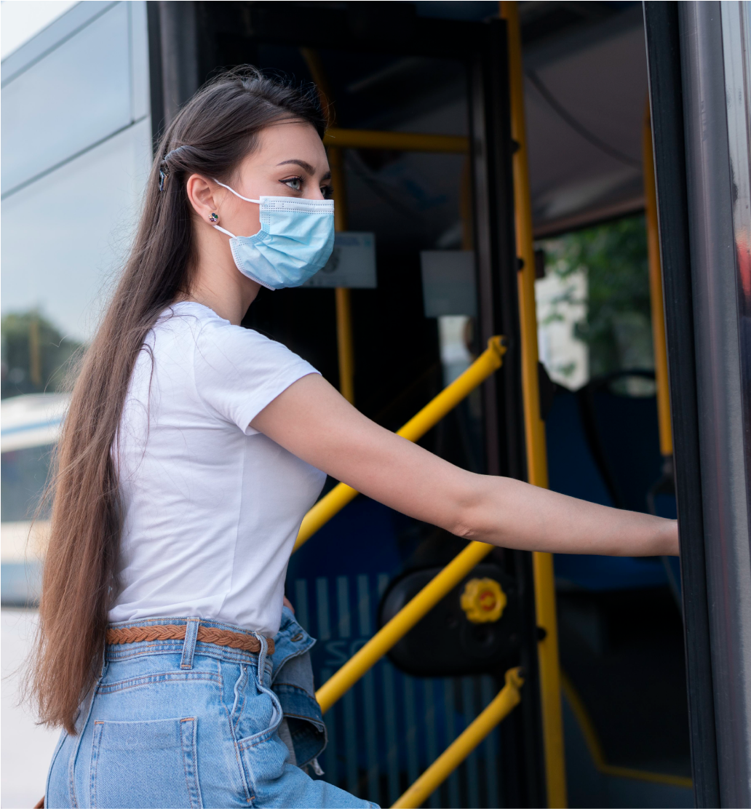

¿De cuánto es la multa que debe pagar si incumple el pico y placa en Medellín?.
Si por alguna razón llega a ser detenido por agentes de tránsito o captado por las cámaras de fotodetección el día que tiene prohibido circular con su vehículo, se enfrenta a una multa que equivale a 523.000 pesos, un aumento de $23.500 con respecto al año anterior, cuando un infractor pagaba $499.500 por un comparendo de este tipo. La inmovilización del vehículo podría sumarse a la sanción económica, dependiendo del caso.
Tenga en cuenta que la restricción incluye vehículos tipo camperos, motocarros y cuatrimotos según el último dígito de la placa. Mientras que para motos, mototriciclos, tricimotos y ciclomotores de dos y cuatro tiempos aplica con el primer número de la placa.
El metro está haciendo pilotos de recorridos son especiales este miércoles.
Buscando estrategias para solucionar las reiteradas contingencias en el servicio, el Metro de Medellín está haciendo unas pruebas pilotos de algunos recorridos que, eventualmente, puedan ayudar a descongestionar el sistema, particularmente en horas pico.
Por ello, entre las 3:15 de la tarde y las 7:15 de la noche de este miércoles algunos trenes realizarán recorridos entre Niquía y El Poblado. Adicional a este recorrido corto el resto de los trenes realizarán el tradicional trayecto entre Niquía y La Estrella. Todos los trenes harán paradas en cada una de las estaciones por las que transiten.

Congestion vehícular en el centro de la ciudad.
Revise bien antes de salir: este es el pico y placa que rige este viernes en Medellín.
Para este viernes 28 de octubre los vehículos particulares con placas terminadas en 2 y 0, y las motos de dos y cuatro tiempos que tengan el primer dígito con estos mismos números deben cumplir la medida de pico y placa. Como es habitual, la restricción aplica entre las 5:00 de la mañana y las 8:00 de la noche. Si la incumple, podría ser sancionado, con multas de $499.500.
Uso de tapabocas en espacios cerrados se levanta, pero con excepciones.
Luego del anuncio del presidente de la República, Iván Duque sobre el levantamiento del tapabocas en espacios cerrados, así como en la extensión de la Emergencia Sanitaria, el ministro de Salud y Protección Social, Fernando Ruiz Gómez fue enfático en indicar que significa que aún se mantendrán casos en los que sí habrá que usar la mascarilla.
 Correcto uso del tapabocas en el trasporte público.